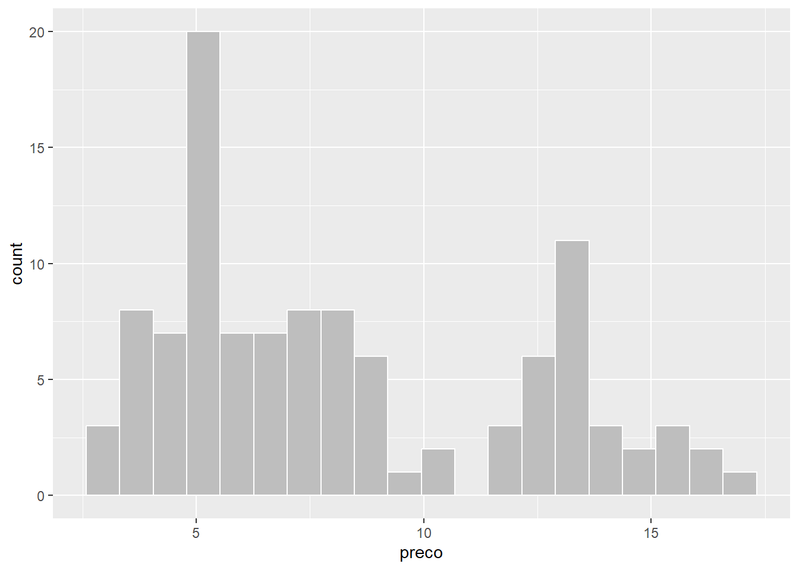
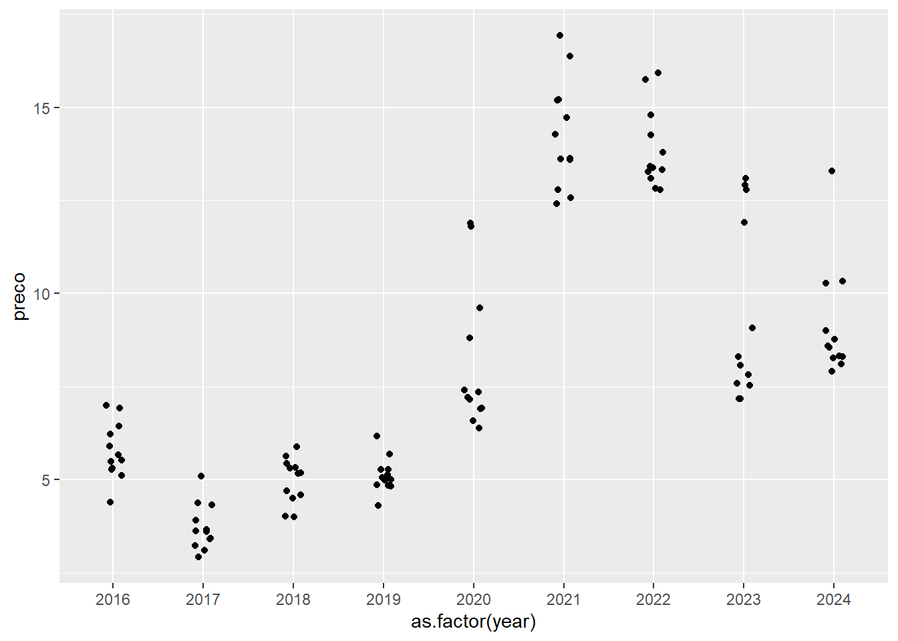
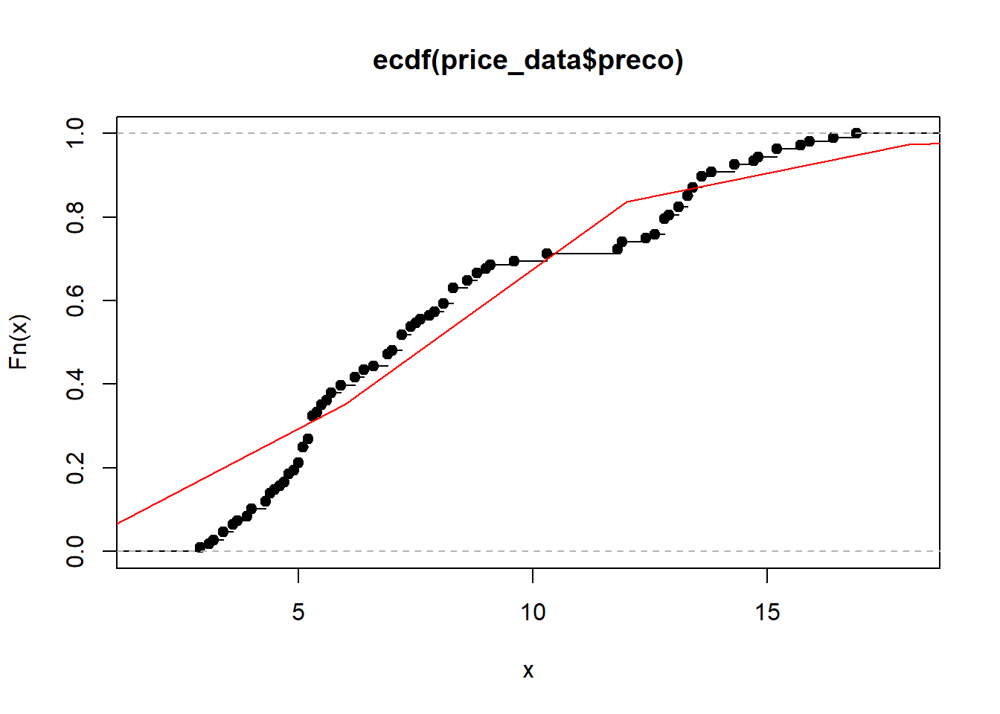
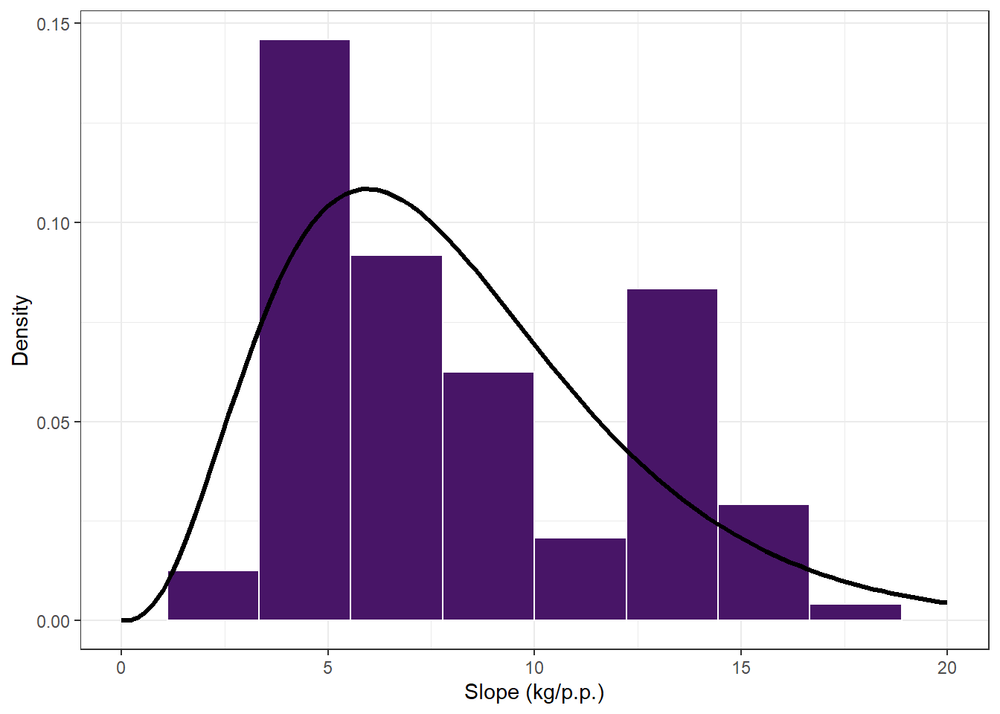
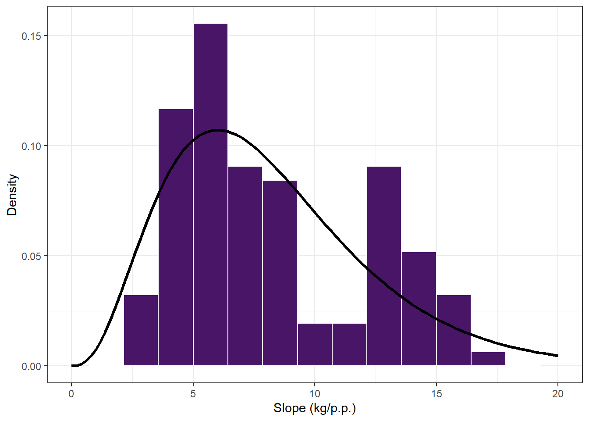
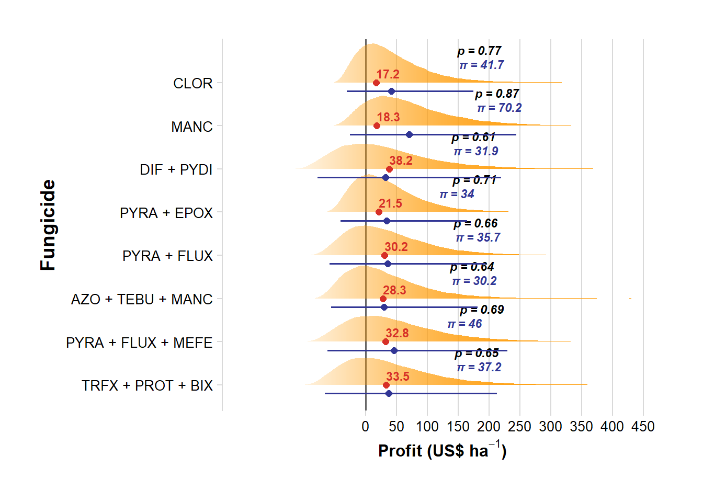

library(tidyverse)
library(readxl)
library(cowplot)
library(gsheet)
library(stats4)
library(minpack.lm)
library(ggdist)
library(lubridate)
library(ggthemes)
library(cowplot)Untitleds
\[ L(\alpha, \beta \mid P) = \prod_{i=1}^n \frac{\beta^\alpha P_i^{\alpha-1} e^{-\beta P_i}}{\Gamma(\alpha)} \]
Economic Analysis
Packages
Import the data
eff_yld_data = gsheet2tbl("https://docs.google.com/spreadsheets/d/1kTmVINkk8W_luffQew4nrMvqrvZQhe6JLjR_WzbBQT4/edit?gid=1891034819#gid=1891034819")
cost_data = gsheet2tbl("https://docs.google.com/spreadsheets/d/11K6BssCO1_qMZEb5sU1BMpbNKE0YrACsT4tAY51KvvY/edit?gid=740235580#gid=740235580")
price_data = gsheet2tbl("https://docs.google.com/spreadsheets/d/1dEC3-AckAFJ3XsWTln1KLbz4jOp3d1sV/edit?gid=1164957368#gid=1164957368") %>%
mutate(data = dmy(data)) |> mutate(year = year(data))Find the most appropriate theoretical distribution for corn price
price_data %>%
ggplot(aes(preco))+
geom_histogram(bins = 20,color ="white", fill = "gray")
price_data %>%
ggplot(aes(as.factor(year), preco))+
geom_jitter(width = 0.1)
FIT
How well does the Gamma distribution fit the empirical data?
# Empirical cumulative distribution function
environment(ecdf(price_data$preco))<environment: 0x0000011cfa662468># These are the cumulative values of the ECDF (accumulated probabilities)
Fx = environment(ecdf(price_data$preco))$y
# Original values
x = environment(ecdf(price_data$preco))$xNonlinear least squares model
# Fits a nonlinear least squares model to the data.
price_reg = nlsLM(Fx ~ pgamma(x, shape, rate, log = FALSE),
start = c(shape = 2.5, rate = 0.13),
control = nls.lm.control(maxiter = 1024))
summary(price_reg)
Formula: Fx ~ pgamma(x, shape, rate, log = FALSE)
Parameters:
Estimate Std. Error t value Pr(>|t|)
shape 3.77499 0.22667 16.65 <2e-16 ***
rate 0.46632 0.03102 15.03 <2e-16 ***
---
Signif. codes: 0 '***' 0.001 '**' 0.01 '*' 0.05 '.' 0.1 ' ' 1
Residual standard error: 0.04761 on 60 degrees of freedom
Number of iterations to convergence: 8
Achieved convergence tolerance: 1.49e-08shape = summary(price_reg)$coef[1]
rate = summary(price_reg)$coef[2]
# Plot the ECDF and overlay the Gamma distribution curve
plot(ecdf(price_data$preco))
curve(pgamma(x, shape, rate), 0, 600, add = T, col = "red")
Visualizing the histogram
price_data %>%
ggplot(aes(preco))+
geom_histogram(aes(y = ..density..),bins = 10, color = "white", fill = "#481567FF")+
stat_function(fun=function(x) dgamma(x, shape, rate), size = 1.2, color = "black")+
theme_bw()+
xlim(0,20)+
labs(x="Slope (kg/p.p.)", y = "Density")
Maximum Likelihood Estimation
MASS::fitdistr(price_data$preco, "gamma", start=list(shape=3.76, rate=0.46)) shape rate
4.79129294 0.57861917
(0.63061276) (0.08029102)plot(ecdf(price_data$preco))
curve(pgamma(x, 3.76, 0.46),0,200, add = T, col = "red")Visualizing the histogram
price_data %>%
ggplot(aes(preco))+
geom_histogram(aes(y = ..density..),bins = 15, color = "white", fill = "#481567FF")+
stat_function(fun=function(x) dgamma(x, 3.76, 0.46), size = 1.2, color = "black")+
theme_bw()+
xlim(0,20)+
labs(x="Slope (kg/p.p.)", y = "Density")
Non linear or MLE
Kolmogorov-Smirnov Test
The Kolmogorov-Smirnov (KS) test is used to compare two cumulative distributions, testing whether the sample distributions are significantly different. The p-value resulting from the KS test indicates the probability that the data distribution is the same as the theoretical distribution (in this case, the Gamma distribution). If the p-value is small (typically less than 0.05), it suggests that the data distribution differs significantly from the theoretical distribution.
# using regression
ks.test(Fx, pgamma(x, shape, rate) )
Exact two-sample Kolmogorov-Smirnov test
data: Fx and pgamma(x, shape, rate)
D = 0.1129, p-value = 0.8285
alternative hypothesis: two-sided# using Maximum likelihood
ks.test(Fx, pgamma(x, 3.76, 0.46))
Exact two-sample Kolmogorov-Smirnov test
data: Fx and pgamma(x, 3.76, 0.46)
D = 0.096774, p-value = 0.9367
alternative hypothesis: two-sided# p-value gives the probability of data distributions be equal to the theoretical distribution obtained Probability distributions
Simulations
library(truncnorm)set.seed(1)
n_sim = 50000
funs = unique(eff_yld_data$fungicide)
box1 = data.frame()
for(i in 1:length(funs)){
# Filtering the data for the current fungicide (without using the 'region' variable)
single_data = eff_yld_data %>%
filter(fungicide == funs[i]) # filter for the respective fungicide yield data
single_cost = cost_data %>%
filter(fungicide == funs[i]) # filter for the respective fungicide cost data
cmin = single_cost$cost - single_cost$cost*0.05 # adjusting a variable cost range for that fungicide
cmax = single_cost$cost + single_cost$cost*0.05
C = runif(n_sim, cmin, cmax) # generating n_sim random values (50000) for product price, uniformly distributed
P = rgamma(n_sim, shape, rate)/60 # generating n_sim random values for corn price based on the equation defined in the previous code
y_mu = single_data$mean_yld # mean yield for the fungicide
y_se = single_data$SE_yld # standard error of yield for the fungicide
Y = rtruncnorm(n_sim, a=0, b=Inf, y_mu, y_se) # ensuring positive values in a truncated distribution
profit = (P * Y) - C # P(corn price) multiplied by mean yield. Subtract the product cost. Get profit
eventos = (C <= (P * Y)) * 1 # checking if the cost is less than or equal to profit, if true is 1, otherwise 0.
# Creating the box for each fungicide
lil_box = data.frame(fungicide = funs[i],
C_point = single_cost$cost, # original cost
C, # simulated product cost
P, # simulated corn price
Y, # simulated yield
profit, # simulated profits
eventos) # less than or equal to profit = 1
# Adding to the overall box
box1 = box1 %>%
bind_rows(lil_box)
}Probability of making a profit
probs = box1 %>%
group_by(fungicide) %>%
summarise(P = round(mean(eventos), 2), #probabilidade de sucesso para cada fungicida
m = mean(profit),
lower = quantile(profit, 0.025),
upper = quantile(profit, 0.975)) %>%
mutate(P = paste("p =", P))
probs %>%
arrange(-m)# A tibble: 8 × 5
fungicide P m lower upper
<chr> <chr> <dbl> <dbl> <dbl>
1 MANC p = 0.87 70.2 -25.4 244.
2 PYRA + FLUX + MEFE p = 0.69 46.0 -62.1 230.
3 CLOR p = 0.77 41.7 -30.6 175.
4 TRFX + PROT + BIX p = 0.65 37.2 -65.9 213.
5 PYRA + FLUX p = 0.66 35.7 -58.6 194.
6 PYRA + EPOX p = 0.71 34.0 -40.2 164.
7 DIF + PYDI p = 0.61 31.9 -78.1 219.
8 AZO + TEBU + MANC p = 0.64 30.2 -56.3 181.#Plot
box1 |>
mutate(fungicide = factor(fungicide, levels = c("TRFX + PROT + BIX","PYRA + FLUX + MEFE", "AZO + TEBU + MANC", "PYRA + FLUX", "PYRA + EPOX", "DIF + PYDI","MANC", "CLOR"))) |>
ggplot(aes()) +
geom_vline(xintercept = 0, color = "gray40", size = 0.7) +
stat_slab(aes(profit, fungicide, alpha = stat(plogis(x / 100))), fill = "#ff9900") +
#stat_pointinterval(aes(x = profit, y = fungicide),
# position = position_dodge(width = 0.8, preserve = "single"),
# .width = c(0.75, 0.95),
# size = 1.2, color = "#313695", alpha = 0.8) +
geom_text(data = probs,
aes(x = m, y = fungicide, label = P),
position = position_dodge(width = 0.8),
size = 3, vjust = -3, hjust = -1.5, color = "black", fontface = "bold.italic") +
geom_point(data = cost_data,
aes(spray, fungicide, shape = "Spray cost"),
size =2, color = "#d73027" )+
geom_text(data = cost_data,
aes(x = spray, y = fungicide, label = sprintf("%.1f", spray)),
size = 3, color = "#d73027", vjust = -0.5, hjust= 0, fontface = "bold")+
guides(alpha = "none", shape = "none", fill = guide_legend(title = "Profit Status")) +
theme_minimal_vgrid() +
theme(legend.position = "bottom",
plot.title = element_text(hjust = 0.5),
axis.title.x = element_text(size = 12),
axis.text.x = element_text(size = 10),
axis.text.y = element_text(size = 10),
panel.grid.major.y = element_blank(),
panel.grid.minor = element_blank(),
panel.background = element_rect(fill = scales::alpha("white", 0.01)),
plot.margin = unit(c(1, 1, 1, 1), "cm")) +
coord_cartesian(xlim = c(-200, 450)) +
scale_x_continuous(breaks = seq(0, 450, by = 50))+
labs(x = expression(bold("Profit (US$ ha"^-1*")")),
y = expression(bold("Fungicide")),
fill = "Profit Status",
color = "Profit Status",
shape = "Cost")+
geom_point(data = probs, aes(x = m, y = fungicide), size = 2, color = "#313695", position = position_nudge(y = -0.2)) +
geom_errorbarh(data = probs, aes(xmin = lower, xmax = upper, y = fungicide),
height = 0, size= 0.6, color = "#313695", position = position_nudge(y = -0.2))+
geom_text(data = probs,
aes(x = m, y = fungicide, label = paste0("π = ", round(m, 1))),
position = position_dodge(width = 0.8),
size = 3, vjust = -1.5, hjust = -1.5, color = "#313695", fontface = "bold.italic")
library(patchwork)
#ggsave("figures/profit.png", dpi=600, height = 7,bg = "white", width = 7)